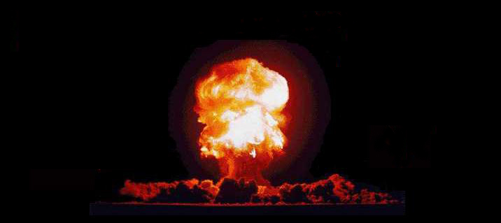

A Destruição
do Mundo

Como já foi dito anteriormente, o homem está
se destruindo a cada dia que passa. Nem todos percebem essas mudanças,
mas, pouco a pouco nosso planeta está nos dando menos condição
de vida.
As guerras estão dizimando cada vez mais
as pessoas que não tem como se defender. É a lei do mais
forte. É incrível como as pessoas encontram motivos para
se destruir. Um exemplo são as guerras santas, cujos crentes dão
a vida em nome da religião. Muitas vezes essas guerras tem o intuito
de destruir outras crenças.
Outra consequência da guerra é o
resíduo deixado, durante e depois dela. Explosivos, minas, lixo
atômico estão proliferando sob nossos pés.
Além disso, os mares estão sendo
infectados e o ar está ficando cada vez mais poluido. Enquanto a
camada de ozônio, que protege a terra dos raios nocivos do sol, está
acabando muito depressa.
Se continuarmos agindo dessa forma, nosso futuro
será viver com mascaras de oxigênio e roupas especiais para
a proteção da pele. Mas até quando???
A tendência é irmos cada vez mais
rápido para esse poço sem fundo. E não é preciso
ser um vidente para saber o que está acontecendo e prever nosso
destino. Dentro de muito pouco tempo, o planeta Terra se tornará
um enorme forno, totalmente sem condições de sobrevivência.
Página Anterior
Página Inicial
Próxima Página